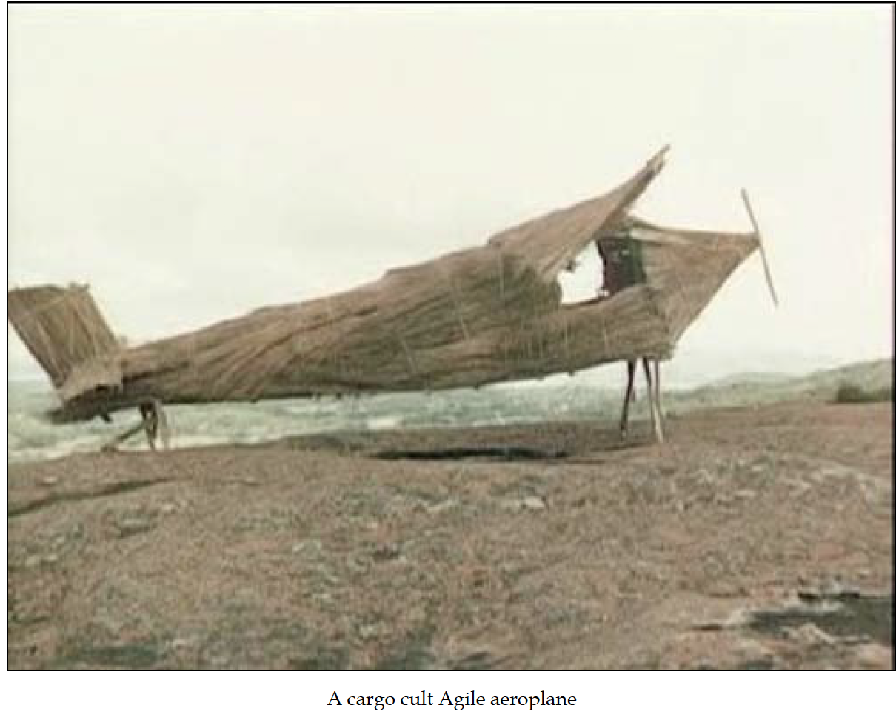

Practical DevOps - Joakim Verona
This chapter focuses on providing the big picture understanding of the what Devops is , advantages of its adoption &and how to integrate it within the current software development processes to maximize efficiency & accuracy. The author first sets the tone for the chapter by emphasizing that implementing DevOps techniques doesn't only require practical skills but soft skills as well.The foremost important step in adopting DevOps is to be able to explain your coworkers about what it is and its advantages &to do that ,having an in depth understanding yourself is indispensable.
So, now lets get down to understanding what DevOps really is? We have heard this term a million number of times,& rather think that it’s just a fancy term for automation but in reality, it is much more than that. DevOps is much more of an art rather than science, meaning there is no standard guidelines set down but rather the implementation depends on the particular scenario. DevOps is a practice which encourages maximum amount of collaboration among the various software disciplines such as Development teams, Q&A teams and Deployment teams.
The chapter gives the user insight into the origins of the modern-day technique known as DevOps. The foundations were laid down on the concepts and principles written down in The Agile Manifesto, 2001 by a group of individuals who wanted to change the status quo of software development drawing conclusions from their several years of experience in the industry. One of the major concepts jotted down in this manifesto emphasizes the importance of focusing on Individuals & Interactions rather than on processes &tools which basically means that company’s should invest not only in tools and processes but rather also in breaking down the silos in which various software disciplines work &fostering a culture of collaboration &communication among them. This problem can be seen to exist in a much more magnified form in large companies.
One of the other major goals of DevOps is automation & continuous delivery. A well trained DevOps engineer will be able to identify immediately existence of a workflow in a process and know how to automate it. Continuous Delivery aka the principle of small batches focuses on releasing features in small iterations incrementally rather than releasing the whole product at once because it ensures that feedback is received after each iteration, based on which teams could alter their strategy by asking themselves whether they’re building the right thing or not.
Next the author goes on to say that DevOps &Continuous Delivery are analogous &cautions how easy it is to lose track of the big picture while following DevOps implementations by saying “Doing nothing faster is of no use to anyone”. If the teams are laying idle during the deploys for unnecessarily long periods of times, this raises a red flag that something is wrong with the process or tools. Idling of teams is expensive to the company &adds no business value. Hence streamlining such processes is the need of the hour for such situations.
Now having established an overall understanding of DevOps, the author explains how DevOps is actually implemented and how it fits into the various Agile Development cycles. He states that the smaller the cycle is, the more visible & measurable the benefit of DevOps is. For eg. The teams employing Kanban cycles (which last for 24 hours) which deploy code manually are wasting days just on the deployment phase. Here, having a CI/CD (Continuous Integration/ Continuous Delivery) pipeline would drastically cut down the deployment time to just a few minutes & ensures that more time is spent on development rather than deployment.
Now the author focuses on understanding the purpose behind building deployment pipelines and not just wind up as followers of the “cargo cults”- a term coined by Richard Feynman in 1965 describing the behavior of cargo cults in the Melanesian South Sea islands. These cargo cults formed during World War II when the islanders watched planes land with useful cargo. After the war stopped, the cargo also stopped coming. The islanders started simulating landing strips, doing everything just as they had observed the American military do, in order to make the planes land. This means that having a DevOps pipeline simply because one has a puppet implementation that only the operations team know anything about should not be the sole reason for using DevOps, but rather the goal is to allow people with different roles to interact with new systems faster and with less work. This, in turn, helps people with different roles interact with each other more efficiently and with less turnaround times.

A very common problem faced quite often is that the output from sprint retrospective - where the team gets together and discusses what went well and what could have gone better during the sprint , isn’t really acted upon &an opportunity to enforce potential improvements is missed out. The cause of this problem is most of times the unfortunate fact that identified problems were caused by some other part of the organization that the team doesn’t communicate well with. As you can probably guess by now, here the implementation of DevOps approach can certainly benefit since it emphasizes on cooperation between roles in an organization.
Chapter 2 - A view from orbitIn this chapter the author has described how the various components of the Continuous Delivery pipeline work and how they fit in together to form the bigger picture. After that he also goes on to explain how the Continuous Delivery pipeline fits into the Agile Development Cycles such as Scrum and Kanban. At the end of the chapter he emphasizes on how to identify the bottlenecks in the deployment process and gives a baseline that if a change being propagated doesn’t reach the integration test servers within a 15 minute window, then there exists a problem in your deployment pipeline which needs to be identified. To support that,he gives an example of a real world practice called Scrum Retrospective also. Everywhere in the chapter he makes comparisons about the various variations that occur with respect to the CD pipeline depending on the company size.